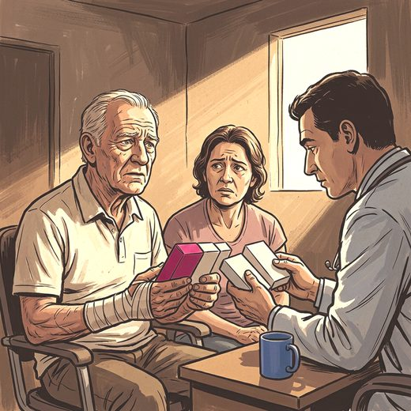

Consulta rápida à beira do leito
Condutas, doses e interações.
Referências da aula · 7
- 2023 American Geriatrics Society Beers Criteria® Update Expert Panel. American Geriatrics Society 2023 updated AGS Beers Criteria® for potentially inappropriate medication use in older adults. J Am Geriatr Soc. 2023;71(7):2052-81. PMID 37139824. doi:10.1111/jgs.18372.PubMedDOI
- O'Mahony D, Cherubini A, Guiteras AR, et al. STOPP/START criteria for potentially inappropriate prescribing in older people: version 3. Eur Geriatr Med. 2023;14(4):625-32. PMID 37256475. doi:10.1007/s41999-023-00777-y.PubMedDOI
- Riemann D, Espie CA, Altena E, et al. The European Insomnia Guideline: an update on the diagnosis and treatment of insomnia 2023. J Sleep Res. 2023;32(6):e14035. PMID 38016484. doi:10.1111/jsr.14035.PubMedDOI
- Sateia MJ, Buysse DJ, Krystal AD, Neubauer DN, Heald JL. Clinical practice guideline for the pharmacologic treatment of chronic insomnia in adults: an American Academy of Sleep Medicine clinical practice guideline. J Clin Sleep Med. 2017;13(2):307-49. PMID 27998379. doi:10.5664/jcsm.6470.PubMedDOI
- Pottie K, Thompson W, Davies S, et al. Deprescribing benzodiazepine receptor agonists: evidence-based clinical practice guideline. Can Fam Physician. 2018;64(5):339-51. PMID 29760253.PubMed
- Livingston G, Huntley J, Liu KY, et al. Dementia prevention, intervention, and care: 2024 report of the Lancet standing Commission. Lancet. 2024;404:572-628. PMID 39096926. doi:10.1016/S0140-6736(24)01296-0.PubMedDOI
- Howell M, Avidan AY, Foldvary-Schaefer N, et al. Management of REM sleep behavior disorder: an American Academy of Sleep Medicine clinical practice guideline. J Clin Sleep Med. 2023;19(4):759-68. PMID 36515157. doi:10.5664/jcsm.10424.PubMedDOI